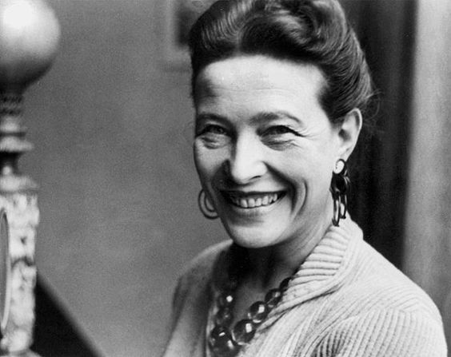

Simone de Beauvoir
Activista de los derechos humanos y feminista. Escribió multiples novelas, ensayos, biografías y monográficos sobre temas políticos, sociales y filosóficos.
Catalina Marziali
Nace en una familia adinerada, en plena burguesía con los pisos más lujosos del aristocrático boulevard Raspail parisino, rodeada de prosapia, dinero, cristianismo y códigos morales estrictos: cuatro cadenas que la asfixiarían día y noche.
FIN DE LA
INFANCIA
BURGUESA
A sus 10 años, sobre el fin de la Primera Gran Guerra, su abuelo materno, Gustave Brasser, presidente del Banco de la Meuse quiebra, obligando a la familia a despojarse de los lujos.
Esto es lo que le permite estudiar, ya que como no pretendía casarse, su padre consideraba que ella debería mantenerse por si misma en un futuro.
“Mediante el trabajo ha sido como la mujer ha podido franquear la distancia que la separa del hombre. El trabajo es lo único que puede garantizarle una libertad completa”
Simone de Beauvoir
“Mediante el trabajo ha sido como la mujer ha podido franquear la distancia que la separa del hombre. El trabajo es lo único que puede garantizarle una libertad completa”
Simone de Beauvoir
ESTUDIANTE
EJEMPLAR
Obtiene multiples títulos en matemáticas, literatura, latín, filosofía, letras, ética, psicología, una tesis sobre Gotfried Leibniz en la Universidad de París .
Su libro más destacado se llama “El Segundo Sexo” el mayor himno feminista todavía vigente. Donde aborda la desigualdad social y política en la que se encontraban las mujeres de la época.
Al final del mismo declara que le encantaría que su libro llegara a caducar en algún momento, lamentablemente es aplicable en todos los sentidos aún en el siglo XXI
Simone no fue la primera feminista, pero sí uno de los íconos más importantes. Desarrolló temas que nadie se atrevía a tocar y lo planteó en un paradigma socialista, teniendo en cuenta los derechos de la mujer trabajadora y alentándola a lo mismo para lograr una libertad económica.
SU AMOR CON
JEAN PAUL
DE SARTRE
En la universidad conoce a Jean Paul Sartre, hombre con el que mantendría una de las relaciones más innovadoras de la época
Allí conoce a Jean Paul Sartre, hombre con el que mantendría una de las relaciones más innovadoras de la época
Ambos tenían los mismos pensamientos sobre el matrimonio y lo rechazaban pues ..
“Sólo podía encontrar libertad en mi cabeza y en mi corazón. Y también decidí no tener hijos”.
Fue una mujer extraordinaria que no tuvo miedo de decir lo que pensaba, que alborotó a un mundo entero con un libro de dos tomos, siendo traducido a más de 10 idiomas diferentes.Vivas permanecen sus palabras en el corazón de muchas ...
“Que nada nos defina. Que nada nos sujete. Que sea la libertad nuestra propia sustancia”